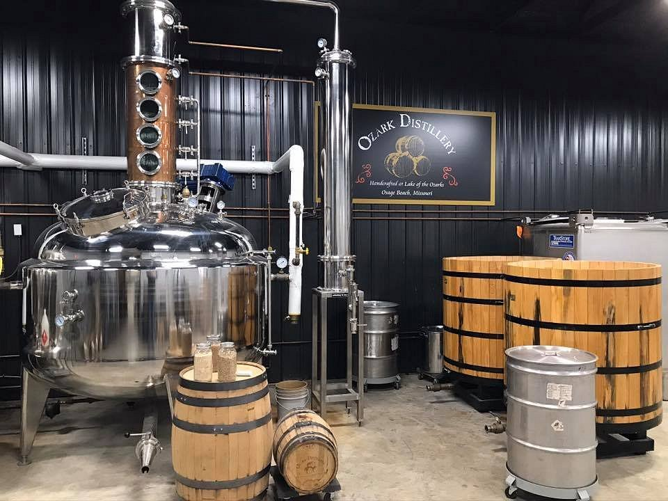
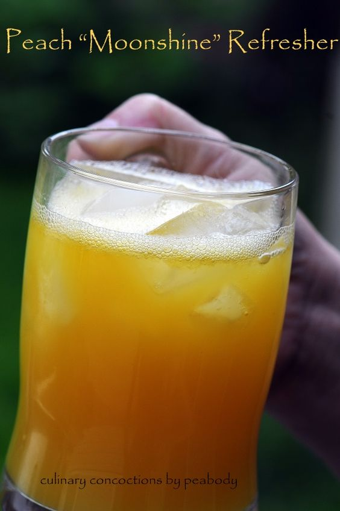
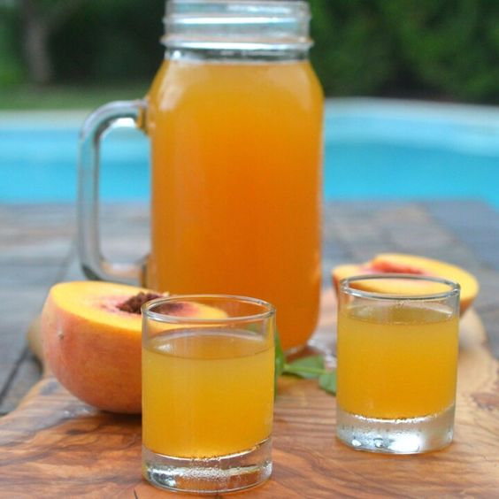

Feeling Peachy
 The still at Ozark Distillery
Summer afternoons around the camper or at the pool occasionally calls for a
relaxing drink. One of my favorite adult beverages happens to be moonshine and Ozark Distillery
moonshine offers a lot of options!! On this post I'll be sharing recipes I make with their peach
flavor!
If you are ever in the Lake of The Ozarks, Missouri, take an afternnon and visit the distillery. They offer tastings and a full
resturant. You can also schedule a tour!! Its a neat experiance and a great way to spend an afternoon in the AC.
Peaches and Cream
 Culinary Concoctions By Peabody
This simple and refreshing drink is super easy and you can keep
all the ingredients in a small travel cooler. Yay camping!!!
- 1 can of cream soda
- 2oz of peach moonshine
Peachy Keen
 I stole this picture from pinterest
Another super easy summer drink I love is peach tea and peach moonshine.
This one is a little less deliberate in exicution so please bear with me.
- Make or buy your favorite peach ice tea and put in into a pitch just a little too big. We need room!!
- Grab you peach moonshine and give it a pour!! I tend to be a little heavy handed here but that's not always a bad thing
- Cut up a fresh peach and garnish the top of the pitcher and any glasses you plan to use
- Pour your lovely tea into glasses and serve to guests!